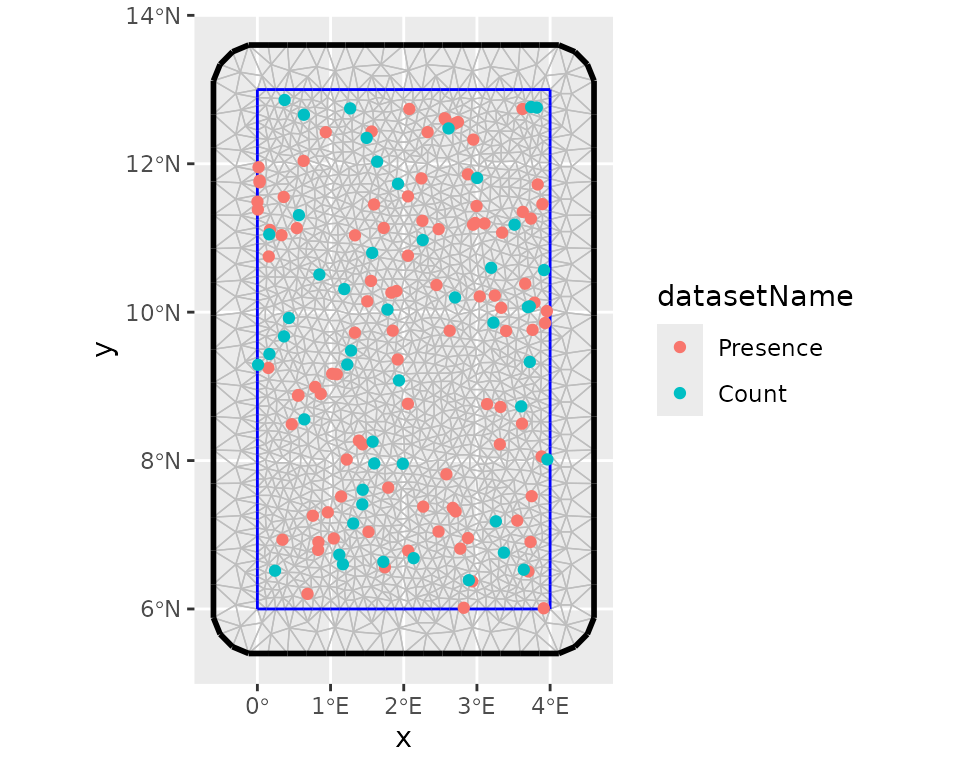
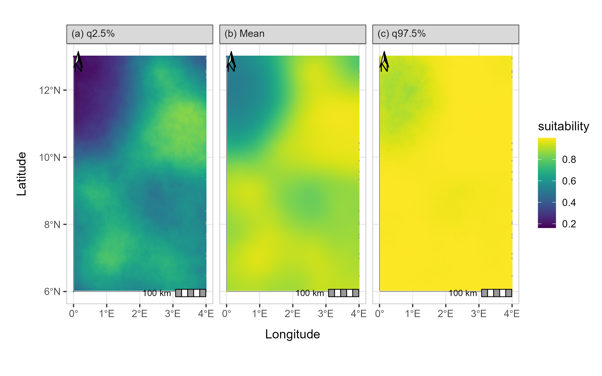

ISDM Evaluation Workflow
Akoeugnigan Idelphonse SODE
Generated on 2026-03-16
Source:vignettes/isdm-workflow.Rmd
isdm-workflow.Rmd
library(isdmtools)
library(sf)
library(terra)
library(fmesher)
library(ggplot2)
library(inlabru)
# library(INLA) # requiredIntroduction
Model-based data integration in the context of species distribution
modeling (SDM) is any statistical approach that combine biodiversity
data from different sampling schemes (see Isaac et al. 2020 for an
overview). The purpose is to correct for certain biases in the primary
data, or providing an overall estimation of species distribution based
on multisource spatial information. A popular integration strategy is
the joint analysis of presence-only (PO) observations which are
generally available as citizen science data and abundance observations
which are often collected through structured sampling protocols. The
primary objective of isdmtools package is to provide a
comprehensive and robust framework for data integration in SDM.
As demonstrated in the Get started
guide, the first output from the isdmtools package is a set
of clean sf objects, which makes it easy to integrate with
various spatial modeling tools using block cross-validation techniques.
The extracted training and testing data can be directly fed into your
preferred integrated modeling tools such as inlabru,
PointedSDMs, or any GLMMs/GAMMs tools that can accommodate
multisource spatial data. This ensures that your model predictions are
validated using a robust spatial cross-validation approach and
comprehensive evaluation metrics.
This vignette shows step by step how the isdmtools can
be used with other predictive modelling tools such as
inlabru for a complete workflow of integrated species
distribution modelling (ISDM) analysis.
Data preparation
In this section, we will be looking at the simulated datasets that were presented in the previous tutorials. These can be obtained using the code snippet below. The objective is to implement an integrated model for the joint analysis of both data.
# Simulate a list of presence-only and count data
set.seed(42)
presence_data <- data.frame(
x = runif(100, 0, 4),
y = runif(100, 6, 13),
site = rbinom(100, 1, 0.6)
) |> st_as_sf(coords = c("x", "y"), crs = 4326)
count_data <- data.frame(
x = runif(50, 0, 4),
y = runif(50, 6, 13),
count = rpois(50, 5)
) |> st_as_sf(coords = c("x", "y"), crs = 4326)
datasets_list <- list(Presence = presence_data, Count = count_data)Prior to data partitioning and fold diagnostics, it is recommended that the study region be defined as an ‘sf’ polygon. This polygon should have the same coordinate reference system (CRS) as the data. This will ensure that it is suitable for the visualisation of spatial folds and the model fitting processes.
# Define the study region (e.g. Benin's boundary rectangle)
ben_coords <- matrix(c(0, 6, 4, 6, 4, 13, 0, 13, 0, 6), ncol = 2, byrow = TRUE)
ben_sf <- st_sf(
data.frame(name = "Region"),
st_sfc(st_polygon(list(ben_coords)), crs = "epsg:4326")
)Now, we can partition the datasets using the clustering blocking scheme for blocked cross-validation.
# Create spatial folds
folds <- create_folds(datasets_list, ben_sf, cv_method = "cluster")
#> train test
#> 1 120 30
#> 2 110 40
#> 3 125 25
#> 4 125 25
#> 5 120 30
# Extract the train/test for the third Fold
train_data <- extract_fold(folds, fold = 3)$train
test_data <- extract_fold(folds, fold = 3)$testFitting an integrated model with inlabru
The inlabru package (Bachl et al.
2019) is a wrapper for R-INLA (Rue, Martino, and Chopin 2009) which is
designed for Bayesian Latent Gaussian Modelling using Integrated Laplace
Nested Approximations (INLA) and Extensions. Let us develop a Bayesian
spatial model with the resampled data above for cross-validation.
Step 1: Model definition
We assume the following basic joint model with a shared latent signal represented by a Gaussian random field with a Matern correlation function:
where means a Inhomogeneous Poisson Process and the vector of a location coordinates. The IPP model presented here is known in spatial statistics as a log-Gaussian Cox process model - LGCP (see, Møller, Syversveen, and Waagepetersen (1998)). Although the large-scale component which includes the data-specific intercept can also incorporate environmental covariates, we assume that the basic joint model above is valid for the data. Alternative specifications of data fusion model have been discussed in Sode et al. (2025).
Step 2: Model implementation
One can now prepare the remaining data required to fit an integrated model. First, we set up the mesh to be used for approximating the latent field as well as for the integration points in the LGCP likelihood.
# Create a "mesh" for the latent field
mesh <- fmesher::fm_mesh_2d(
boundary = ben_sf,
max.edge = c(0.2, 0.5),
offset = c(1e-3, 0.6),
cutoff = 0.10,
crs = "epsg:4326"
)
# Visualise the whole data points with the mesh
ggplot() +
inlabru::gg(mesh) +
gg(folds$data_all, aes(color = datasetName))
After this step, we can define the prior distributions for the hyperparameters of the latent component such as the range and the marginal standard deviation, keeping default prior (i.e. Gaussian distribution with precision 0.001) for the intercepts. we use the penalized model component complexity priors (see Simpson et al. (2017) for more details). Then we define the observation model for each data type and fuse them using a joint likelihood estimation with INLA and SPDE techniques (Simpson et al. 2016).
# Set the PC-prior for the SPDE model. We estimate a longer range value as no spatial
# autocorrelation was defined in the data generation process:
pcmatern <- INLA::inla.spde2.pcmatern(mesh,
prior.range = c(1, 0.1), # Prob(spatial range < 1) = 0.1
prior.sigma = c(1, 0.1) # Prob(sigma > 1) = 0.1
)
# The shared spatial latent component is denoted by 'spde'
jcmp <- ~ -1 + Presence_intercept(1) + Count_intercept(1) +
spde(geometry, model = pcmatern)
# Count observation model
obs_model_count <- inlabru::bru_obs(
formula = count ~ +Count_intercept + spde,
family = "poisson",
data = train_data$Count
)
# Presence-only observation model (LGCP)
obs_model_pres <- inlabru::bru_obs(
formula = geometry ~ Presence_intercept + spde,
family = "cp",
data = train_data$Presence,
domain = list(geometry = mesh),
samplers = list(geometry = ben_sf)
)
# Model fit
jfit <- inlabru::bru(jcmp, obs_model_count, obs_model_pres,
options = list(
control.inla = list(int.strategy = "eb"),
bru_max_iter = 20
)
)We can collect model results after the process of model fitting. As expected, the estimated spatial range is higher than 1. This is because there is no strong spatial autocorrelation in the simulated data.
jfit$summary.fixed
#> mean sd 0.025quant 0.5quant 0.975quant mode kld
#> Count_intercept -0.2497590 0.3086958 -0.8547916 -0.2497590 0.3552737 -0.2497590 0
#> Presence_intercept 0.9269141 0.2836352 0.3709992 0.9269141 1.4828289 0.9269141 0
#>
jfit$summary.hyperpar
#> mean sd 0.025quant 0.5quant 0.975quant mode
#> Range for spde 3.535334 2.5240208 0.9513318 2.8572241 10.2509603 1.9527898
#> Stdev for spde 0.512346 0.1926203 0.2183487 0.4842595 0.9647017 0.4317979Step 3: Model prediction
# Define the prediction grids and projection system
grids <- fmesher::fm_pixels(mesh, mask = ben_sf)
projection <- "+proj=longlat +ellps=WGS84 +datum=WGS84"Suitability analysis and model evaluation with
isdmtools
Step 4: Habitat suitability analysis
Once we have obtained the model predictions, we can then use
isdmtools to perform habitat suitability analysis. This
will allow us to proceed with the evaluation of models and the
visualisation of results.
# Probability of presence
jpred <- format_predictions(jpred)
jt_prob <- suitability_index(jpred,
post_stat = c("q0.025", "mean", "q0.975"),
output_format = "prob",
response_type = "joint.po",
projection = projection,
scale_independent = TRUE
)
plot(jt_prob)
# Expected counts
jpred_count <- format_predictions(jpred_count)
jt_count <- suitability_index(jpred_count,
post_stat = c("q0.025", "mean", "q0.975"),
output_format = "response",
response_type = "count",
projection = projection
)
plot(jt_count)Step 5: Model performance evaluation
Various performance metrics can now be computed, including dataset-specific and weighted composite scores using the test data and model predictions. As you will notice, certain arguments to the suitability_index() function are left at their default values. Specifically, this concerns the number of background points, the threshold method (which is “best”), and the best method (which is “youden”). The latter is the Youden criterion, which corresponds to the threshold that maximises both sensitivity and specificity.
xy_observed <- rbind(
st_coordinates(datasets_list$Presence)[, c("X", "Y")],
st_coordinates(datasets_list$Count)[datasets_list$Count$count > 0, c("X", "Y")]
)
metrics <- c("auc", "tss", "accuracy", "rmse", "mae")
eval_metrics <- compute_metrics(test_data,
prob_raster = jt_prob$mean,
expected_response = jt_count$mean,
xy_excluded = xy_observed,
metrics = metrics,
overall_roc_metrics = c("auc", "tss", "accuracy"),
response_counts = "count"
)
print(eval_metrics)
#> ISDM Model Evaluation Results
#> ----------------------------------------------
#> Datasets Evaluated: Presence, Count
#> Overall Performance:
#> TOT ROC SCORE : 0.8048
#> TOT ERROR SCORE : 1.9353
#> ----------------------------------------------One can obtain detailed overview of the evaluation results via the
summary() method.
summary(eval_metrics)
#> ==============================================
#> ISDM EVALUATION SUMMARY REPORT
#> ==============================================
#> Generated on: 2026-01-19 04:41:02
#> --- Model Evaluation Settings ---
#> Random Seed : 25
#> Background Points : 1000
#> Spatial Context : BackgroundPoints object attached
#> Threshold Logic : best
#> Optimality Criterion: youden
#> Prediction Type : Absolute Count (No Offset)
#> --- Detailed Metric Table ---
#> Presence Count
#> AUC 0.917 0.750
#> TSS 0.791 0.750
#> ACCURACY 0.794 0.778
#> RMSE N/A 2.119
#> MAE N/A 1.752
#> --- Composite Scores (Weighted) ---
#> AUC TSS ACCURACY RMSE MAE
#> 0.852 0.775 0.788 2.119 1.752
#> --- Overall Performance ---
#> TOT ROC SCORE : 0.8048
#> TOT ERROR SCORE : 1.9353
#> ==============================================As you will have noticed, continuous-outcome metrics such as MAE
(mean absolute error) and RMSE (root mean squared error) are not
available for presence-only data, which makes sense. Furthermore, the
weighted composite scores for continuous responses are identical to
their individual counterparts, since there is only one count response.
Moreover, you can check out the get_background()
documentation for more details on background sample generated during the
model evaluation.
Next, you can iterate through all five spatial folds to obtain an average model performance, then calculate the variation in metrics between blocks. Finally, you should run a model on the full data (i.e. ‘datasets_list’) in order to make the final prediction.
Step 6: Prediction mapping
You can now generate a formal prediction map ready for publication.
Assume that the probability of the species presence is stored in the
object ‘jt_prob’ after the final model fitting, key summary statistics
in this object can be visualised using the generate_maps()
helper which return a ggplot object that can be customised by the
user.
map <- generate_maps(jt_prob,
var_names = c("q0.025", "mean", "q0.975"),
base_map = ben_sf,
legend_title = "suitability",
panel_labels = c("(a) q2.5%", "(b) Mean", "(c) q97.5%"),
xaxis_breaks = seq(0, 4, 1),
yaxis_breaks = seq(6, 13, 2)
)
map
Prediction map of the ISDM model
Conclusion
Using isdmtools, you have successfully fused
multi-source biodiversity data and generated spatially independent
partitions for robust model validation. The toolkit has enabled the
resampling of data and the diagnostics of folds, thereby
reducing the effects of spatial autocorrelation in the
modelling process. It has also facilitated the analysis and
comprehensive evaluation of ISDM using well-known metrics from the
fields of statistics and machine learning. The outputs of the final
model are visualised to obtain an annotated map ready to be interpreted
for deriving valuable insights from the integrated analysis. The
flexibility of isdmtools in providing a unified framework
for evaluating ISDM based on any combination of the major three types of
SDM data as well as its versatility to be integrated with other
competing tools make it an appealing toolkit for ecologists and spatial
statisticians.